Project 1: Image Filtering and Hybrid Images
Answered Questions
1. Explicitly describe image filtering (the input, the transformation, and the output) and why it is useful for computer vision.
Image filtering is the convolution of an image and a filter. A color image is an array with 3 channels for colors red, blue, and green, and a grayscale image is an array with only one channel. The image may be viewed as the input signal in the convolution. A filter is also an array, which can be viewed as the impulse response in the convolution. The resulting array of the convolution is the filtered image.
Image filtering is useful in computer vision because they can reveal or isolate information that is obscured or imperceptible in the input image. For example, edge detector filters may isolate boundaries in the image. Additionally, low pass filters isolate the majority of the color information in an input image.
2. What is the different between a high pass filter and a low pass filter in how they are constructed, and what they do to the image?
A low pass filter is constructed by selecting filter array entries that will in some way average the values of the neighboring pixels in the convolution. A low pass filter take an weighted or unweighted average of the neighboring pixels. A box filter outputs an unweighted average while a gaussian filter outputs a weighted average. Low pass filters blur its input image.
A high pass filter is constructed by selecting filter array entries that will in some way increase the contrast between a pixel and its neighbors. A high pass filter will sharpen an image.
3. How does the Fourier transform relate to image filtering?
According to the Fourier transform, an image can be decomposed into sum of spatial waves of different amplitudes and frequencies. Image filtering may be understood as the manipulation of the frequencies or amplitudes of these waves. A low pass filter, for example, will eliminate or reduce the amplitude of the high frequency waves. A high pass filter may eliminate or reduce the amplitude of the low frequency waves. Moreover, the convolution of an image and a filter, may be viewed as the product of their respective Fourier transformations in the frequency domain.
Implementation
The algorithm for my_imfilter employs two functions: filter_pixel and pad_image. Pad image takes the input image and filter as arguments and returns the image padded with zeros. The padding function extracts the geometry of the image and filter and computes the boundaries needed to fully perform the convolution. The pad_image function uses the built-in MATLAB function padarray. The pad_image function works for both color and grayscale images.
The filter_pixel function takes an index, a padded image, and a filter as arguments, and returns the value of the correlation at the given index.
The my_imfilter function first calls pad_image to pad the input image. The my_imfilter function then rotates the filter array by 180 degrees. The function then loops over every column, row, and color channel, computing the correlation of the input image and the rotated array. The output of this correlation is the convolution. The values of the convolution then populate a new array, which is the filtered image.
BikeBike, CatPug, and BirdPlane
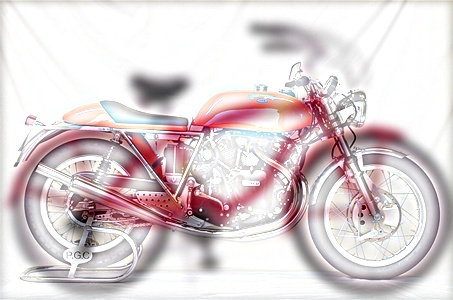
 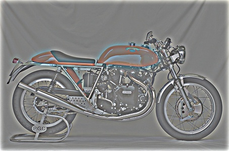
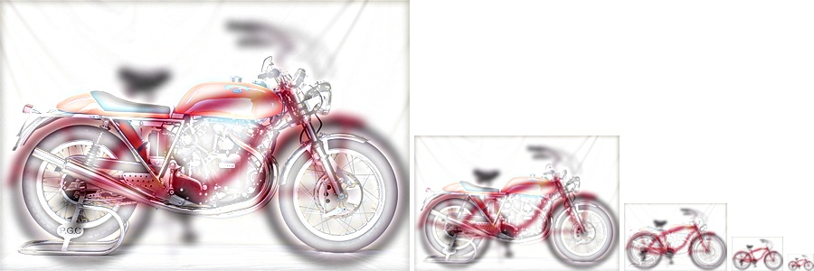
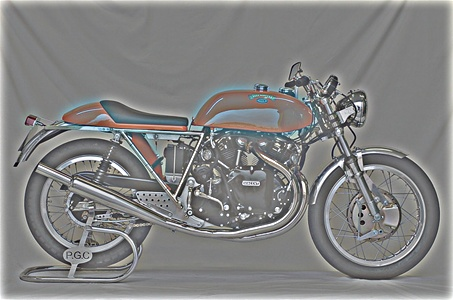
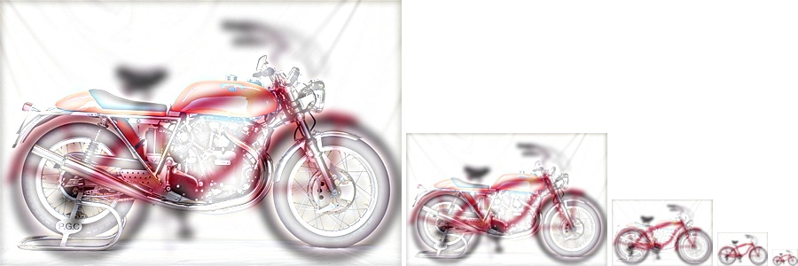
|
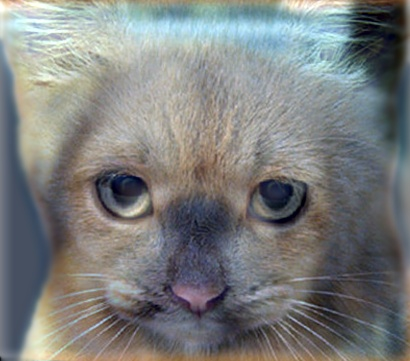
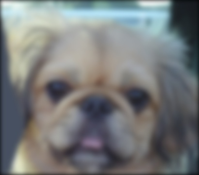
 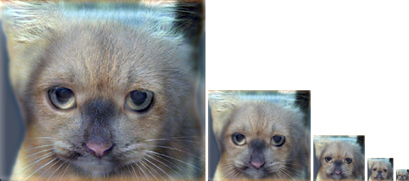
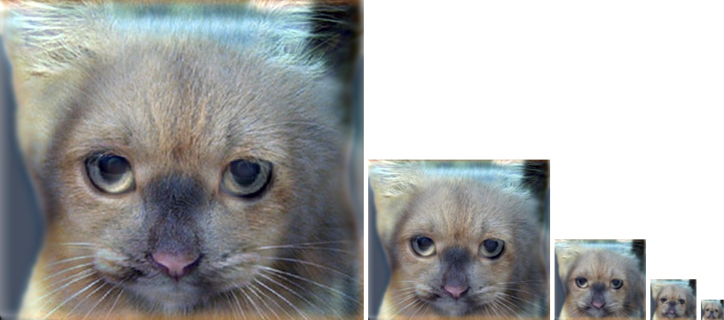
|

 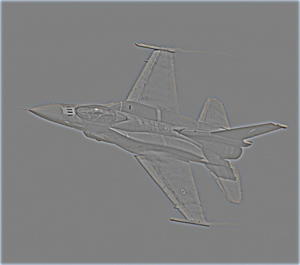
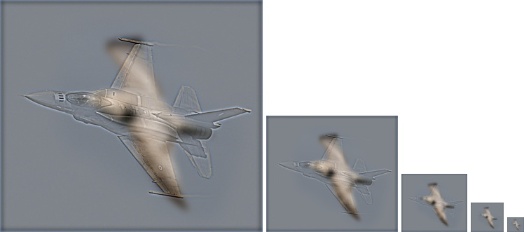
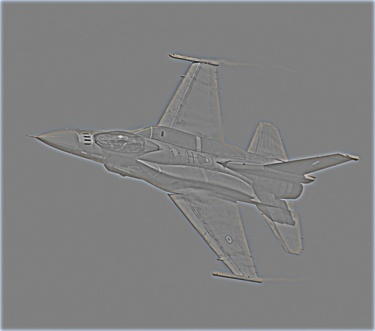
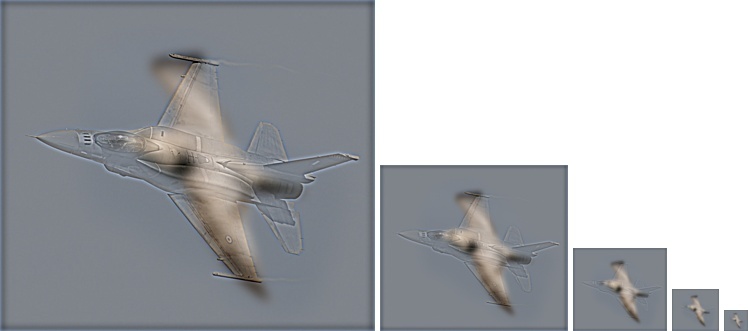
|
BikeBike
The first row shows a bicycle-motorcycle hybridization. The first image is the hybridized image. The second image shows the low frequency information of the bicycle. The low-passed image was obtained by convolution with a 21x21 Gaussian filter with a standard deviation of 5. The third image shows the high frequency information of the motorcycle. The high frequency information was obtained by subtracting a low-passed image from the input image. The low-passed image was obtained by convolution with another 21x21 Gaussian filter with a standard deviation of 5. The fourth image shows the downsampled hybrid image.
CatPug
The second row shows images of a cat and dog hybridization. The first image shows the hybridized form. The second image shows the low frequency information of the dog. The low frequency image was obtained by convolution with a 17x17 Gaussian filter with a standard deviation of 4. The third image shows the high frequency information of the cat. The high-frequency image was obtained, again, by subtracting a low-passed image from the input image. The low-passed image was obtained by convolution with a 29x29 Gaussian filter with a standard deviation of 7. The fourth photo shows the downsampled hybrid image.
BirdPlane
The third rows shows images of a bird and plane hybridization. The first image shows the complete hybridized image. The second image shows the low frequency information of the bird. This image encodes the almost all of the color seen in the hybridized form. The low-passed image was created by convolution with 21x21 Gaussian filter of standard deviation 5. The third image shows the high-frequency information of the plane. This image was obtained in the same method as the previous two high-pass images. The low-pass image was obtained by convolution with a 9x9 Gaussian filter with a standard deviation of 2. The fourth image shows the downsampled image.